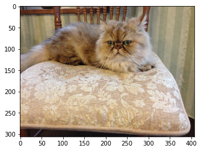

本記事はQrunchからの転載です。
次のような画像があったとします。

ここから猫だけ抽出したいときに、ツールを使えば少し手間はかかりますが、切り取れると思います。
実はOpenCVのGrabcutsを使えば非常に簡単にそれが実現できます。
（ディープラーニング使えばできるよね？はおいておいて）
Grabcutsを使ってみる
矩形を指定
最初に猫を囲うような矩形を指定する方法を試していきます。 OpenCVのGrabcutsは以下のように利用できます。
bgd_model = np.zeros((1, 65), np.float64)
fgd_model = np.zeros((1, 65), np.float64)
rect = (0, 30, 300, 120)
mask = np.zeros(img.shape[:2], np.uint8)
cv2.grabCut(img, mask, rect,
bgd_model, fgd_model, 10,
cv2.GC_INIT_WITH_RECT)
各引数の意味は以下のとおりです。
- maskの詳細は一旦おいておきます。
- rectは猫を囲う矩形をあらわし、$(x,y,w,h)$の形式のタプルです。
- bgd_modelとfgd_modelは内部で利用する変数なのですが、わざわざ外から与える必要があります。 なぜかといえば、grabCut関数を適用したあとに、同じ画像に再度grabCutを適用したいケースがあるのですが、そういったときに同じbgd_modelとfgd_modelを使い回す必要があるためです。 そのため、外から変数を与えられるようになっています。
- 6つめの引数の10とあるのは、アルゴリズムの反復回数です。
- 最後のcv2.GC_INIT_WITH_RECTは指定した矩形をもとに前景である猫を抽出してくださいと指定しているflagです。
分割された領域の情報はmaskに格納されます。 maskに格納される値は以下のような意味になります。
- 0は確実に背景
- 1は確実に前景
- 2は多分背景
- 3は多分前景
以下のようにして抽出された前景を抽出します。
def plot_cut_image(img, mask):
cut_img = img * np.where((mask==1) | (mask==3), 1, 0).astype(np.uint8)[:, :, np.newaxis]
plt.imshow(cut_img[:, :, ::-1])
plt.show()
上手く猫だけを抽出できていますね。
maskを指定
次に下の画像から猫を抽出することを考えます。

まずは、さきほどと同じようにやってみます。
bgdModel = np.zeros((1,65),np.float64)
fgdModel = np.zeros((1,65),np.float64)
rect = (0, 30, 300, 120)
mask = np.zeros(img.shape[:2],np.uint8)
cv2.grabCut(img, mask, rect,
bgdModel, fgdModel, 10,
cv2.GC_INIT_WITH_RECT)

椅子と猫の色味が似ているためか上手くいきません。
ここでmaskの出番です。
前景として扱いたい部分をmaskに指定してあげることができます。
猫の顔の右下の部分を前景としたいので、その部分のmaskの値を1にします。
また、grabCutの最後の引数もcv2.GC_INIT_WITH_MASKというflagに変えることで、maskを使えるようにします。
mask[100:130, 200:280] = 1
cv2.grabCut(img, mask, rect,
bgdModel, fgdModel, 10,
cv2.GC_INIT_WITH_MASK)
いい感じです！ 追加で猫の顔の右上もmaskに前景として指定します。
mask[50:100, 250:270] = 1
cv2.grabCut(img, mask, None,
bgdModel, fgdModel, 10,
cv2.GC_INIT_WITH_MASK)
ほぼほぼ上手く猫が抽出できました！